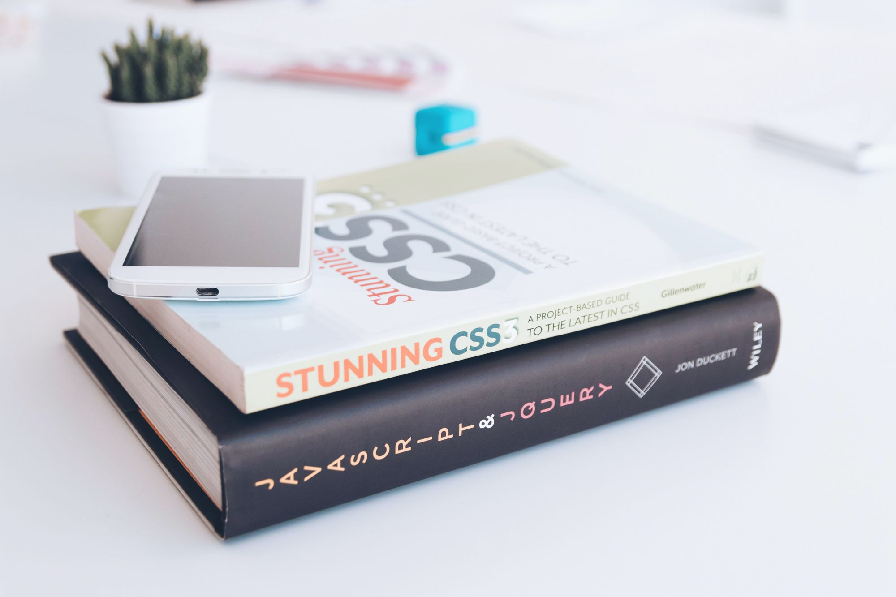
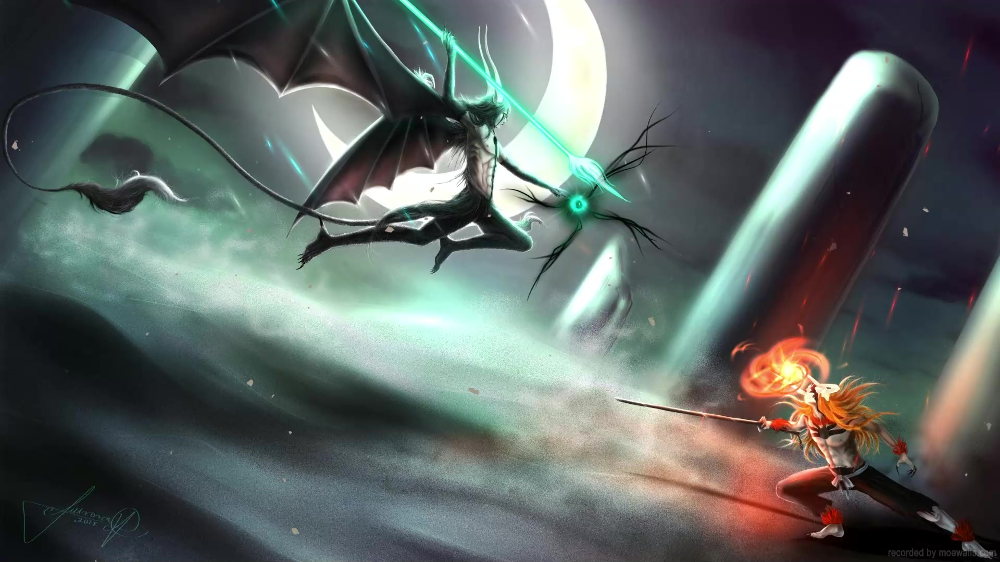
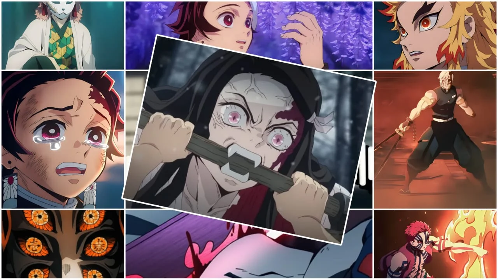
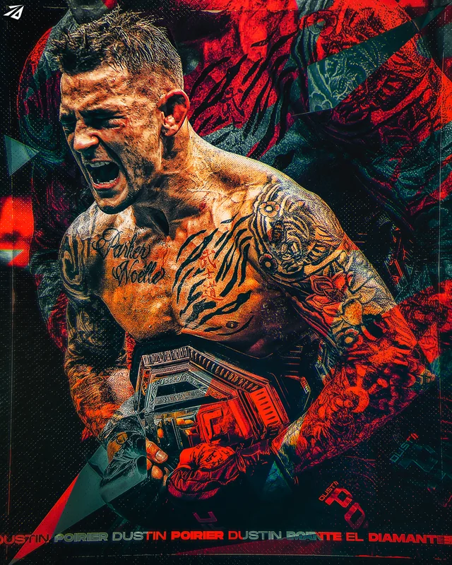
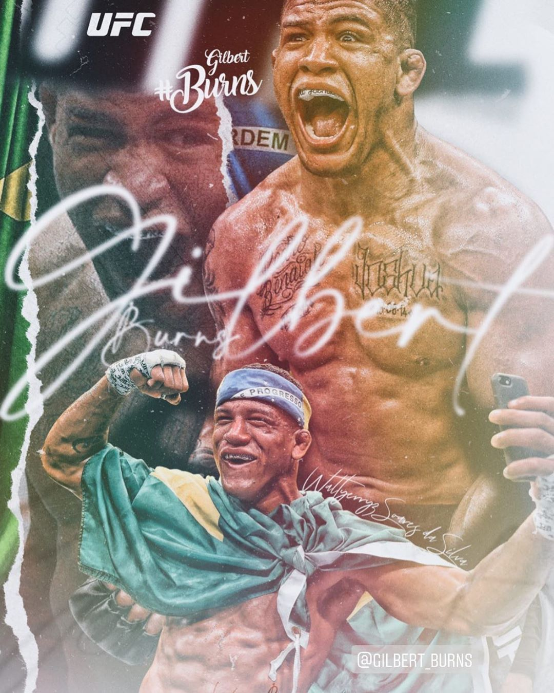
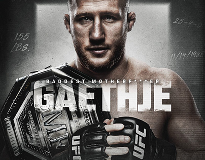

ABOUT ME
Welcome to my personal website. Here's a little about who I am.
I am one of six children, the second oldest, and I grew up in Cape Town's Cape Flats. Like many who find themselves in this environment, life was far from easy. Raised by a single mom who often had no idea where our next meal would come from, I quickly learned the value of resilience and resourcefulness. Looking back, I realize that these challenges have given me a unique advantage. The fact that I came from nothing makes me appreciate everything I have today and every opportunity I’m given.
In 2014, my life changed forever when I was blessed with my daughter. This moment shook me into a different gear, making me realize that I needed to find stability and become a role model for her, even before I knew her gender. This realization led me to Capitec Bank, where I felt a strong connection and saw myself as a professional. I worked hard to sell myself to the staff, eventually getting the chance to speak with the branch and regional managers. Despite my lack of professional polish at the time, they saw something in me and gave me the opportunity to compete for a spot at the company.
After two months of tests and interviews, I was welcomed into the Capitec family, starting my role just one month before my daughter was born. Since then, I’ve worked my way up from a consultant to a senior branch manager. Beyond the financial security, my partner (Me Amore), and the ability to provide for my family, the greatest gift Capitec has given me is the chance to grow, to push my limits, and to bring others along on that journey. This is the culture we are creating—a place where hard work and ambition are rewarded, and where we lift each other up.
As you explore the rest of this site, you’ll discover my hobbies and interests, from my love of anime to my passion for MMA and learning new things. These are not just pastimes; they are reflections of my journey, my values, and the way I approach life.
MY PROFESSIONAL JOURNEY
Here's a brief overview of my professional background.
My ACACADEMIC JOURNEY
My journey through learning and development has been diverse and enriching. Here's a snapshot of my academic achievements and areas of expertise:
Languages

Throughout my studies, I have gained proficiency in various programming languages including JavaScript, Python, HTML, CSS, and SQL. My focus has been on mastering both front-end and back-end technologies to become a versatile developer.
Full-Stack Development

I have completed several projects that involve both front-end and back-end development. My experience includes working with frameworks and libraries such as React, Node.js, and Express, enabling me to build complete, functional web applications.
DevOps Engineering
In addition to development, I have explored DevOps practices to streamline the development lifecycle. My skills include continuous integration and deployment (CI/CD), containerization with Docker, and cloud services like AWS and Azure.
MY SKILLSET
Here are some of the skills I have acquired:
JavaScript

Click to learn more about JavaScript.
Python

Click to learn more about Python.
HTML

Click to learn more about HTML.
CSS
Click to learn more about CSS.
SQL

Click to learn more about SQL.
ANIME THAT INSPIRES ME
Anime has influenced my thinking in many ways. Here are my top 5 favorites:
1. Jujutsu Kaisen (JJK)
Click to learn more about this anime.
2. Naruto

Click to learn more about this anime.
3. Bleach
Click to learn more about this anime.
4. Demon Slayer
Click to learn more about this anime.
5. Dragon Ball Z
Click to learn more about this anime.
MY PASSION FOR MARTIAL ARTS
I have a deep love for MMA and Jujutsu. Here are my top 5 fighters:
1. Amanda Nunes
Click to learn more about this fighter.
2. Dustin Poirier
Click to learn more about this fighter.
3. Max Holloway
Click to learn more about this fighter.
4. Gilbert Burns
Click to learn more about this fighter.
5. Justin Gaethje
Click to learn more about this fighter.